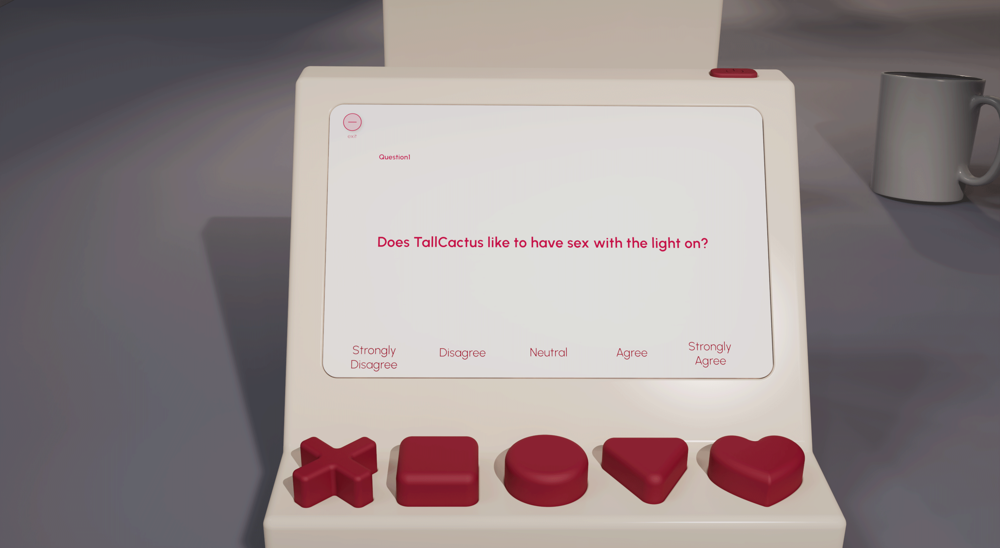

Interlunar provides a novel multimodal interaction on how couples can
communicate about sex. The integration of TMC (Technology-mediated
communication) and FtF(Face to Face) interaction aims to stimulate FtF
conversation through TMC with its disinhibition effect to reduce the
discomfort of difficult conversations, and allows users to communicate
naturally in a relaxed game atmosphere.

Sexual communication is the key to opening up a fulfilling and
satisfying intimate relationship with your partner. It's not just
about talking about sex, it's about really understanding each other's
desires, boundaries, and needs in the bedroom. It's about creating a
safe, nonjudgmental space where partners can express themselves openly
and honestly without fear of rejection or misunderstanding. It's about
actively listening to your partner, being empathetic, and validating
their feelings. It's about expressing your desires confidently while
respecting your partner's boundaries. It's about negotiating and
finding a mutually satisfying solution. It's about building intimacy
and connection through effective sexual communication. In short,
better sexual communication is about fostering a healthy and
satisfying sexual relationship based on mutual respect, understanding,
and emotional intimacy.
From Literature and research, I learned the reason why sexual
communication is difficult for many people, because it is
face-threatening, which means when people talk about messages about
sex or stigmatized identities will threaten the positive social value
a person claims for themselves during an interaction.
One study found that technology-mediated communication plays an
important role in communication among members of the stigmatized
community of BDSM.
Technology results in less shame or embarrassment in disclosing
stigmatized desires or aiding in moving past personal feelings of
shyness. Discussing topics only through TMC can harm relationship
satisfaction, while face-to-face discussions are noted to be more
valuable for communication, especially for something as intimate as
sex.
Research also found that Integration of TMC and FtF interaction was
positively associated with relational satisfaction. At the same time,
The very meaning of FtF interaction can be shaped by TMC.

Interlunar, is an integration of TMC with FtF interactions. it aims
to stimulate FtF sexual communication through digital sexual
communication.
The game can be divided into four steps, the first three parts will be
conducted through TMC, the first part is a couple co-edited question
list through the app, the second part is reading the questions
together from the screen, and then giving the answer. Last step is
face-to-face conversation based on the question or the mismatched
answers.

This game was inspired by the popular American television show
Newlyweds Game, which pits newlyweds against each other in a series of
revealing rounds of questions to determine the degree to which spouses
understand each other or do not.
If you were asked directly if there had been any previous
communication problems between you and your partner, it would be hard
to recall for a while. Let the couple discover where they
misunderstood each other in the game and the conversation will happen
naturally.